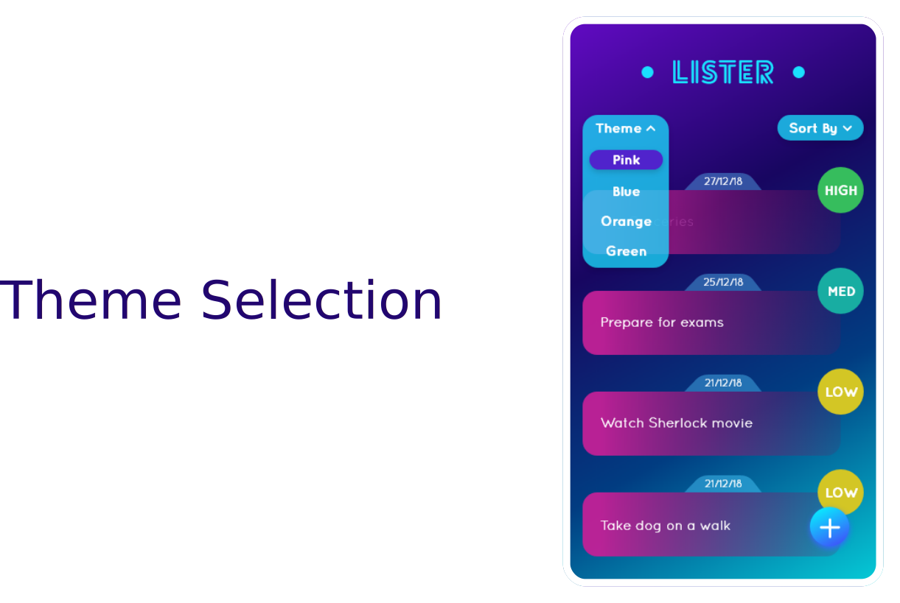
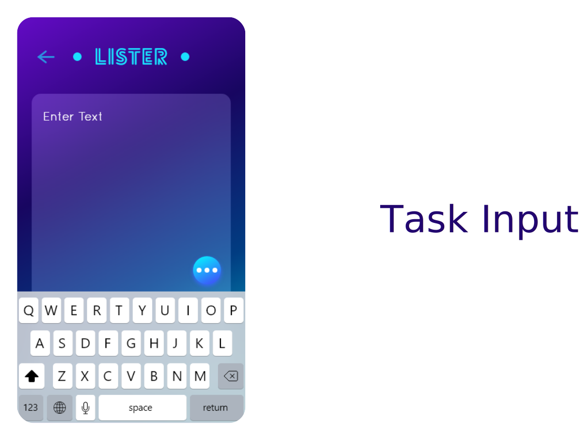
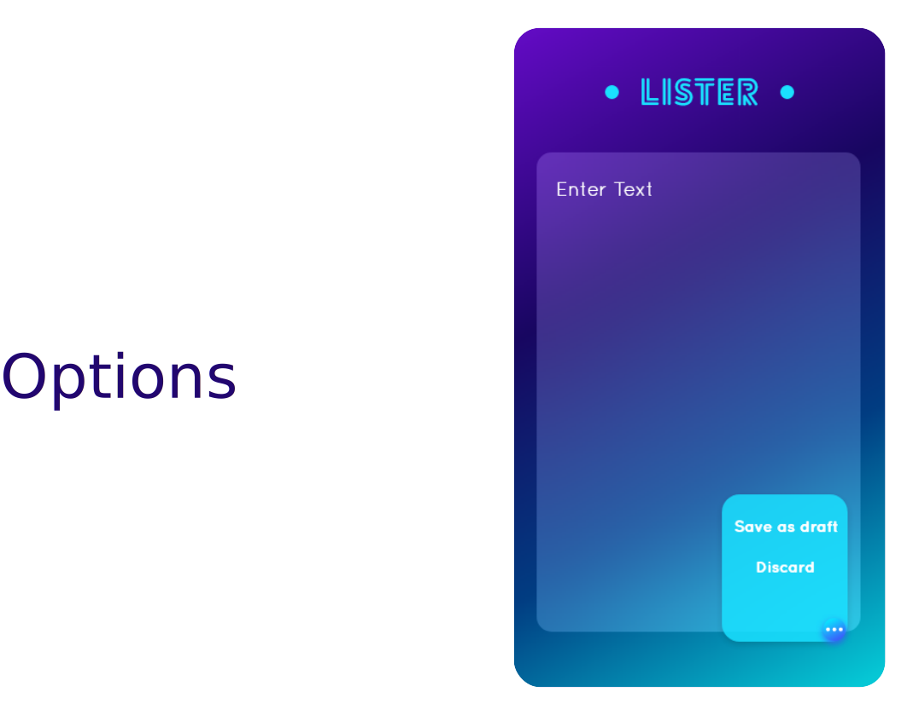
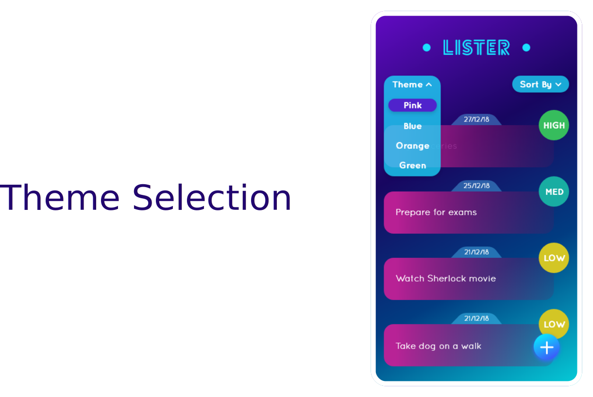
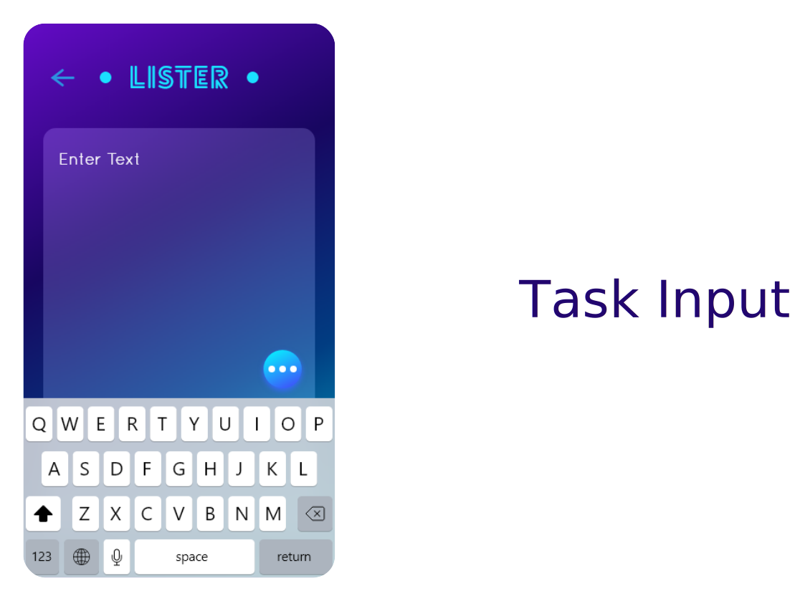
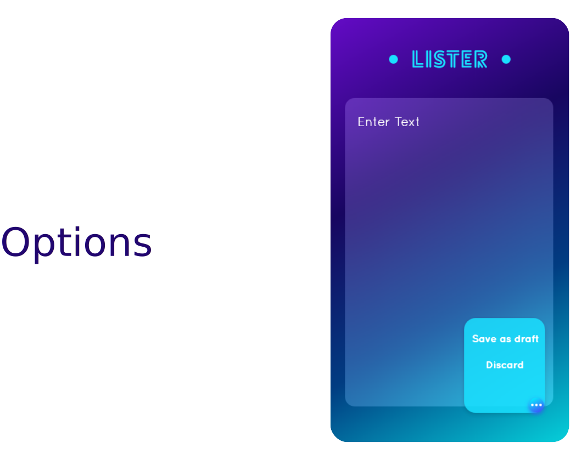

Project Brief
Lister is a to-do app that lets you add new tasks
according to the priority.
The app can help the user in completing all the tasks without getting unnoticed and regretting later about it.
The app can help the user in completing all the tasks without getting unnoticed and regretting later about it.


 




